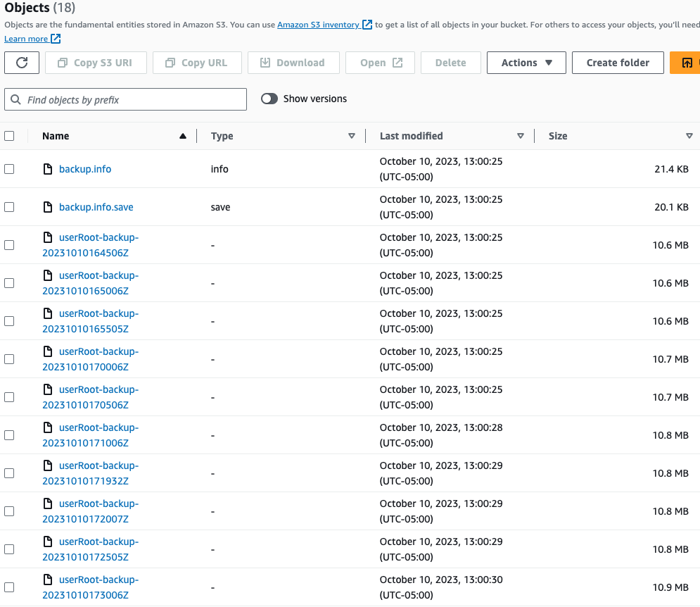

S3 Archive of a PingDirectory Backup
Demonstration Only
This guide is for demonstration purposes only. It is not intended for production use and is just one of many ways of archiving files to S3. Other storage options might be available, depending on your provider.
Before you begin
You must:
- Complete Get Started to set up your DevOps environment and run a test deployment of the products
- Have some means of authenticating the sidecar container to S3. This authentication can use an IAM role or other methods and is left for the user to implement.
High-level backup steps
- Configure some means of creating a backup of PingDirectory. For this guide, an extension of the PingDirectory Backup and Sidecar is used.
- After the backup is made, use an archive script to upload the backup to S3.
- (Optional) Clean up the image filesystem of backups.
File exploration
In the 30-helm/s3-sidecar directory of this repository, you will find the following files:
Dockerfile
This file extends the PingToolkit image, adding the AWS CLI. You do not have to use the toolkit image as the base, it is used here for demonstration purposes.
## Dockerfile for AWS CLI
## For demonstration purposes only
## Not intended for production use
FROM pingidentity/pingtoolkit:latest
USER root
# Install AWS CLI
RUN curl "https://awscli.amazonaws.com/awscli-exe-linux-x86_64.zip" -o "awscliv2.zip" \
&& unzip awscliv2.zip \
&& ./aws/install \
&& sleep 5 \
&& rm -rf ./aws*
USER 9031:0
After the image is built, it will need to be tagged and pushed to a repository that is accessible to the Kubernetes cluster.
pd-archive-backup-to-s3.yaml
This file will not be repeated in full here. The top section creates ConfigMaps that define four sample scripts:
- archive.sh - This demonstration script is called by the backup.sh script to archive the backup to S3. The bucket name and path will need to be updated to match your environment.
- fetch.sh - This demonstration script is called by the restore.sh script to fetch backup files from S3. The bucket name and path will need to be updated to match your environment.
- backup.sh - This demonstration script is called by the sidecar container to create a backup of PingDirectory. It then calls the archive.sh script (with no error handling or testing).
- restore.sh - This demonstration script would be executed either by a job or in the sidecar container to restore a backup of PingDirectory.
These scripts are placed into the sidecar image under the /opt/in directory.
Lines 218 and 219 will need modification to point to the registry and tag for the image with the AWS utilities added.
Backup Operation
The process ran by this demonstration is straightforward. Every 6 hours:
- A backup of the PingDirectory data is created
- The backup is archived to S3
PingDirectory handles the removal of old backups based on the parameters set in the backup script.
If you are observing the cluster at the time of the backup, an additional pod launches to execute the cronjob. This pod terminates after the backup is complete.
Over time, the S3 bucket will appear similar to the following. For purposes of this screenshot, the backup and archive process ran every 5 minutes.

Restore Operation
In the event that a restore operation is needed, the restore.sh script can be used. This script will:
- Download the backup from S3
- Restore the backup to the PingDirectory data directory
A sample run of the script is shown below:
PingToolkit:demo-pingdirectory-0:/opt
> /opt/in/restore.sh <admin-password>
download: s3://<bucket-name>/<folder>/userRoot/backup.info to userRoot/backup.info
download: s3://<bucket-name>/<folder>/userRoot/backup.info.save to userRoot/backup.info.save
download: s3://<bucket-name>/<folder>/userRoot/userRoot-backup-20231012191506Z to userRoot/userRoot-backup-20231012191506Z
download: s3://<bucket-name>/<folder>/userRoot/userRoot-backup-20231012191006Z to userRoot/userRoot-backup-20231012191006Z
download: s3://<bucket-name>/<folder>/userRoot/userRoot-backup-20231012192506Z to userRoot/userRoot-backup-20231012192506Z
download: s3://<bucket-name>/<folder>/userRoot/userRoot-backup-20231012192006Z to userRoot/userRoot-backup-20231012192006Z
Replication is not enabled
userRoot
Restoring to the latest backups under /tmp/restore
Restore order of backups: /tmp/restore/userRoot
----- Doing a restore from /tmp/restore/userRoot -----
Restore task 2023101219275710 scheduled to start immediately
NOTE: This tool is running as a task. Killing or interrupting this tool will not have an impact on the task
If you wish to cancel the running task, that may be accomplished using the command: manage-tasks --no-prompt --hostname localhost --port 1636 --bindDN "cn=administrator" --bindPassword "********" --cancel "2023101219275710"
[12/Oct/2023:19:27:57 +0000] severity="SEVERE_WARNING" msgCount=0 msgID=1880227932 message="Administrative alert type=backend-disabled id=2ecdf7c6-400e-4375-bc5c-8e4795c9c868 class=com.unboundid.directory.server.core.BackendConfigManager msg='Backend userRoot is disabled'"
[12/Oct/2023:19:27:57 +0000] severity="NOTICE" msgCount=1 msgID=1880555611 message="Administrative alert type=config-change id=6f88ec8c-56c5-4146-9c71-ed387dd02d00 class=com.unboundid.directory.server.admin.util.ConfigAuditLog msg='A configuration change has been made in the Directory Server: [12/Oct/2023:19:27:57.316 +0000] conn=-4 op=5857 dn='cn=Internal Client,cn=Internal,cn=Root DNs,cn=config' authtype=[Internal] from=internal to=internal command='dsconfig set-backend-prop --backend-name userRoot --set enabled:false''"
[12/Oct/2023:19:27:59 +0000] severity="NOTICE" msgCount=2 msgID=8847445 message="Restored: .environment-open from backup with id '20231012192506Z' (size 76)"
[12/Oct/2023:19:27:59 +0000] severity="NOTICE" msgCount=3 msgID=8847445 message="Restored: 00000000.jdb from backup with id '20231012192506Z' (size 11194781)"
[12/Oct/2023:19:27:59 +0000] severity="NOTICE" msgCount=4 msgID=8847445 message="Restored: esTokenizer.ping from backup with id '20231012192506Z' (size 39)"
[12/Oct/2023:19:27:59 +0000] severity="SEVERE_WARNING" msgCount=5 msgID=1880227932 message="Administrative alert type=je-environment-not-closed-cleanly id=2b0418d3-5a1a-4c86-9003-c0b9c5c8828e class=com.unboundid.directory.server.backends.jeb.RootContainer msg='The server has detected that the Berkeley DB JE environment located in directory '/opt/out/instance/db/userRoot' may not have been closed cleanly the last time it was opened (or that the backend has just been restored from a backup taken with the server online). The database environment may need to replay changes from the end of the transaction log to guarantee the integrity of the data, and in some cases this may take a significant amount of time to complete'"
[12/Oct/2023:19:28:00 +0000] severity="NOTICE" msgCount=6 msgID=8847402 message="The database backend userRoot using Berkeley DB Java Edition 7.5.12 and containing 20008 entries has started"
[12/Oct/2023:19:28:00 +0000] severity="NOTICE" msgCount=7 msgID=1879507338 message="Starting group processing for backend userRoot"
[12/Oct/2023:19:28:00 +0000] severity="NOTICE" msgCount=8 msgID=1879507339 message="Completed group processing for backend userRoot"
[12/Oct/2023:19:28:00 +0000] severity="INFORMATION" msgCount=9 msgID=1891631108 message="Starting access control processing for backend userRoot"
[12/Oct/2023:19:28:00 +0000] severity="INFORMATION" msgCount=10 msgID=12582962 message="Added 2 Access Control Instruction (ACI) attribute types found in context 'dc=example,dc=com' to the access control evaluation engine"
[12/Oct/2023:19:28:00 +0000] severity="NOTICE" msgCount=11 msgID=1880555611 message="Administrative alert type=config-change id=a776d141-3eb9-44b5-9066-25e6e3a79f34 class=com.unboundid.directory.server.admin.util.ConfigAuditLog msg='A configuration change has been made in the Directory Server: [12/Oct/2023:19:28:00.106 +0000] conn=-4 op=5868 dn='cn=Internal Client,cn=Internal,cn=Root DNs,cn=config' authtype=[Internal] from=internal to=internal command='dsconfig set-backend-prop --backend-name userRoot --set enabled:true''"
Restore task 2023101219275710 has been successfully completed
Restore complete